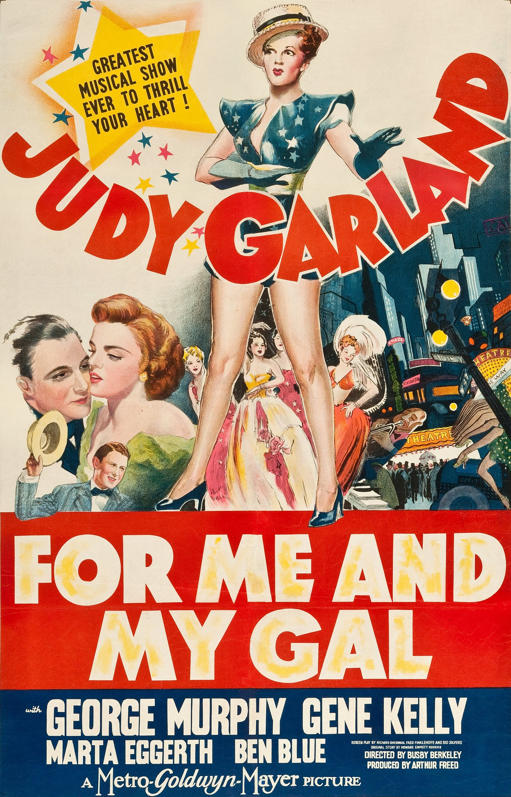
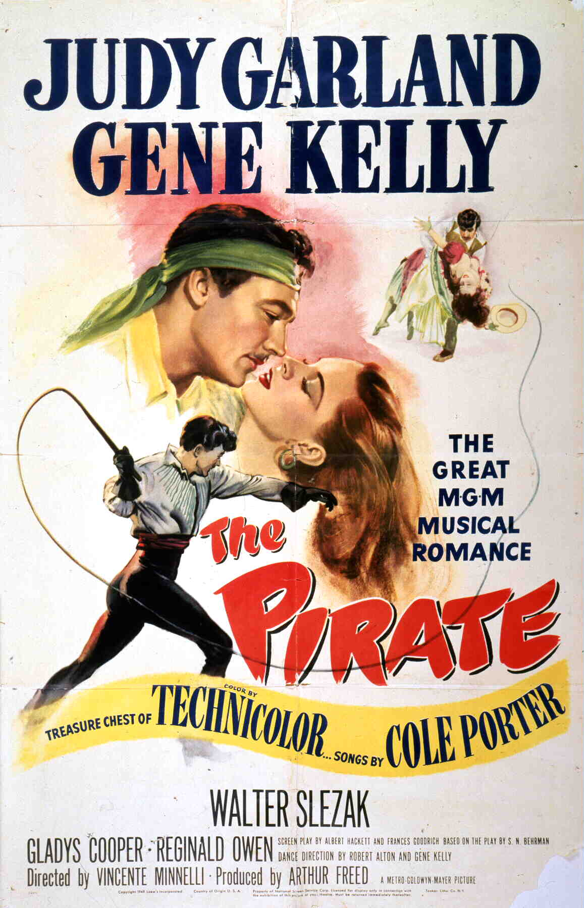
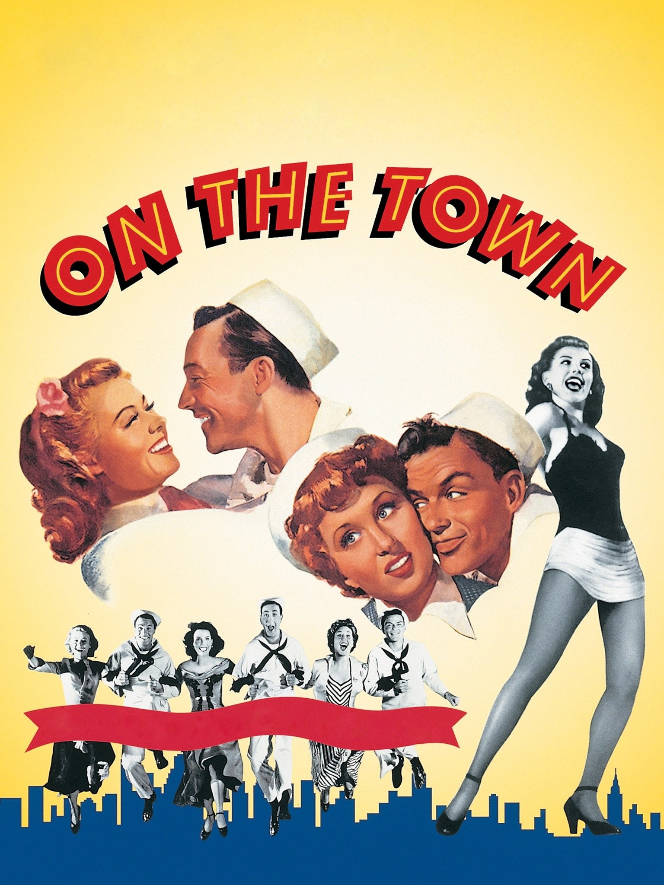
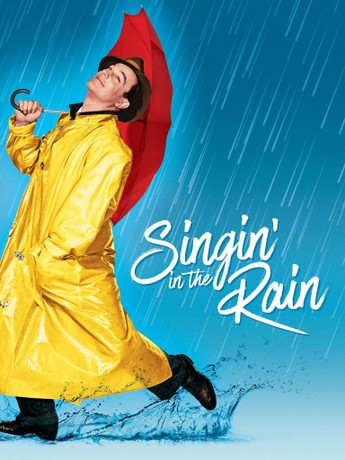
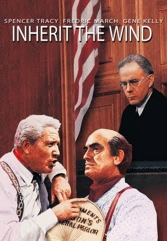
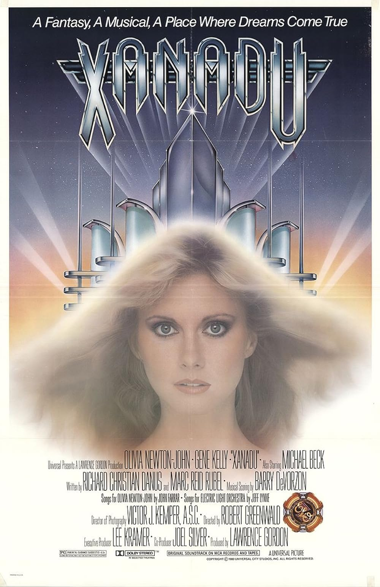

Gene Kelly
Here are some of Gene Kelly works!

Gene Kelly film debut was the movie For Me and My Gal (1942) co-starring along side Judy Garland and George Murphy. The movie is a musical / romance with a runtime of 1 hour and 44 min and was directed by Busby Berkeley.
Watch the Trailer Here!

The Pirate (1948) is a movie starring Gene Kelly as the actor Serafin. Gene Kelly stars along side Judy Garland, Walter Slezak, and Gladys Cooper.
Watch the Trailer Here!

On The Town (1949) stars Gene Kelly and also the iconic singer Frank Sinatra. The movie has a run time of 1 hour and 38 min and it is a musical / comedy. Additionally this movie has the famous song "New York, New York" (not the Frank Sinatra one you might be thinking of...........)
Watch the "New York, New York" song here!

Singin' in the Rain (1952) is probably Gene Kelly's most famous movie. It has a musical/comedy with a run time of 1 hour and 43 min. In this movie Gene Kelly gave one of his most iconic preformances, preforming the song Singin' in the Rain.
Watch the preformance here!

Inherit The Wind (1960) is a drama with a run time of 2 hours and 7 min. The movie is the same story as the play of the same name, with Spencer Tracy starring as Drummond, Fredric March starring as Brady, and Gene Kelly starring as E.K. Hornbeck.
Watch the Trailer Here!
